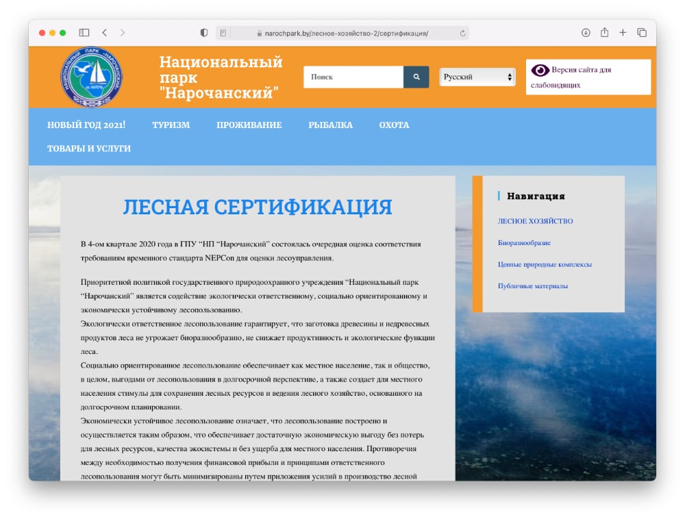

Примеры и пояснения относительно некоторых критериев FSC
Ниже приведены некоторые пояснения и примеры относительно тех критериев, по которым достаточно часто выявляются несоответствия (нарушения) при проведении сертификации FSC, а именно: требования по сохранению элементов биоразнообразия при проведении рубок, выделению репрезентативных участков, выделению и охране мест обитания/произрастания редких и исчезающих видов, выделению и мониторингу лесов высокой природоохранной ценности и информированию общественности о результатах деятельности держателя сертификата.
Требования по сохранению элементов биоразнообразия при проведении рубок
Уровень разнообразия животного и растительного мира на том или ином участке территории определяется прежде всего разнообразием условий местообитания, биотопов. К таким структурным объектам и комплексам относятся:
- типы и подтипы растительности, лесные формации или группы формаций (мелколесья и кустарники, смешанные леса, широколиственные леса, сосновые, березовые леса и т.д., болота верховые, переходные, низинные, луга материковые или пойменные и др.);
- возрастные состояния лесов (молодняки, средневозрастные или высоковозрастные леса);
- водные объекты (водоемы, реки, каналы, родники);
- экотоны (опушки, берега рек и озер, переходные зоны от лесов к болотам и т.д.);
- отдельные геоморфологические образования (дюны, обрывы, отмели, поймы, крутые склоны);
- открытые участки среди леса (поляны, вырубки);
- отдельные внутриценотические элементы (сухие, одиночные, дуплистые деревья, пни, валежник, валуны и кучи камней, обнажения минерального грунта, муравейники, норы и т.д.);
- особенности пространственной структуры древостоев, «окна» в пологе, крупные деревья, наличие и состав примеси лиственных или хвойных, присутствие подлеска.
Объекты, важные для сохранения биоразнообразия, — это:
- редкие лесные формации (дубравы, липняки, кленовники, ильмовники, ясенники),
- редкие типы леса (сосняки и березняки лишайниковые, приручейно-травяные, ельники осоковые и осоково-сфагновые и т.д.),
- островные местообитания за пределами ареала (ели, граба, ольхи серой),
- высоковозрастные насаждения,
- разновозрастные насаждения,
- многоярусные насаждения,
- насаждения, в составе которых более 4 пород,
- насаждения, в составе которых 20% и более осины с D>15 см,
- сосняки, многократно пройденные низовыми пожарами,
- места обитания редких и охраняемых видов флоры и фауны,
- леса, не затронутые лесохозяйственной или иной деятельностью,
- леса, граничащие с открытыми болотами,
- леса, граничащие с водотоками или водоемами,
- леса в пойме и граничащие с поймой,
- заболоченные бессточные участки до 5 га среди суходолов,
- островные леса до 5 га среди сельхозугодий,
- леса на минеральных островах до 5 га среди болот,
- леса на минеральных островах среди рек и озер,
- леса в долинах малых рек,
- леса, сопряженные с миграционными путями животных,
- участки лесов, граничащие с местами произрастания или обитания охраняемых и редких видов флоры и фауны (являющиеся потенциальными местами обитания для данных видов),
- перестойные деревья,
- деревья выдающихся размеров, с дуплами, редких форм,
- богатый по видовому составу, имеющий кормовое значение подлесок,
- покрытие ягодными кустарничками более 25% выдела,
- разнообразная эпифитная лихенофлора,
- крупномерный сухостой, высокие пни, сухостой с дуплами,
- обилие мертвой древесины разного возраста и стадий разложения,
- опушки,
- популяции редких и охраняемых видов флоры и фауны,
- родники,
- ручьи,
- истоки и верховья рек,
- скопления камней, валунов,
- овраги,
- карбонатная почва,
- выраженный мезо- и микрорельеф водоразделов (крутые склоны, западины, ложбины и т.п.),
- выраженный мезо- и микрорельеф речных долин (гривы, прирусловые валы),
- лесные поляны,
- луга всех типов более 0,5 га среди лесов,
- колониальные поселения птиц,
- объекты, имеющие культурно-историческую ценность и являющиеся специфическими местами обитания для растений и животных (аллеи, парки, фортификационные сооружения,
- участки брусчатых дорог, каменные фундаменты и т.п.).
Исходя из этого, при проведении рубок главного пользования (РГП) лесное хозяйство должно ориентироваться на следующие цели:
- формирование разновозрастного насаждения со сложной пространственной структурой;
- формирование смешанного по составу древостоя;
- формирование смешанного по происхождению древостоя;
- сохранение биологически полезного подлеска (ягодных и медоносных кустарников), разнообразия кустарниковых пород, связанных с ними пищевыми и топическими связями видов, а также убежищ для лесных зверей и птиц;
- сохранение опушечной зоны для предотвращения экспансии нелесных видов, снижения отрицательного воздействия ветров, инсоляции;
- оставление малоценных фрагментов древостоя (неликвида, не достигших возраста спелости деревьев, групп подроста) для сохранения лесной среды, убежищ для лесной флоры и фауны, ускорения естественного заращивания вырубок, исключение непроизводительных трудозатрат, создание запаса будущего валежа;
- проведение РГП преимущественно в зимний период с целью предохранения от повреждений травяно-кустарничкового и мохово-лишайникового ярусов, снижения фактора беспокойства;
- сохранение отдельных вековых деревьев и деревьев, выдающихся по размерам, возрасту, величественному облику, поскольку они являются также местами обитания группы редких мхов, лишайников, насекомых, птиц, источниками уникальной дендрохронологической информации (10−15 шт/га);
- сохранение деревьев редких пород и причудливых форм для придания ландшафту определенного своеобразия;
- сохранение дуплистых деревьев (всех) в качестве мест обитания и привлечения животных-дуплогнездников, а также связанных с ними зоокомплексов (хищников, паразитов, сверхпаразитов и т.п.);
- сохранение высоких пней в качестве присад для хищных птиц, мест гнездований, создание запаса будущего валежа;
- сохранение отдельных крупномерных сухостойных деревьев в качестве специфического местообитания для большой группы растений, грибов, бактерий, животных, присад для хищных птиц (до 10 шт./га) в случае если они не несут угрозу и не опасны при проведении работ в лесу;
Очистка вырубок от порубочных остатков может проводиться смешанным способом, сочетающим в себе несколько вариантов:
- частичное сжигание порубочных остатков в кучах с целью создания условий для произрастания и обитания видов, связанных с гарями (пиробионты);
- частичное оставление порубочных остатков в кучах, валах для сохранения органики древесных отходов, формирование микроповышений, способствующих укоренению древесных пород, особенно на избыточно увлажненных почвах и пр.;
- разбрасывание порубочных остатков после измельчения для сохранения органики древесных отходов и ее быстрый перевод в гумус.
Выделение репрезентативных участков
В стандартах FSC существует понятие репрезентативных участков, которые должны занимать не менее 5% площади и оставаться нетронутыми навсегда. Там не проводят рубки.
Если участок пока не выделен, важно знать: выделение происходит при общественном участии, и на выбор репрезентативных участков можно повлиять. Можно выслать ГПУ или ГЛХУ свои предложения по выделению конкретных участков в качестве репрезентативных.
Репрезентативные участки экосистем — это участки, дающие объективное представление о естественных экосистемах рассматриваемой территории и представляющие собой резерваты дикой природы данной местности.
Это эталонные участки экосистем, предназначенные для мониторинга природных процессов и являющиеся модельными для данной территории. Эти участки предназначены для сохранения или восстановления жизнеспособных примеров природных экосистем, существующих в этом географическом регионе. Ради их сохранения ограничивается хозяйственная деятельность, за исключением случаев, когда проведение хозяйственных мероприятий направлено на их сохранение или восстановление.
Репрезентативные участки имеют строгий режим охраны. На них запрещены любые виды лесохозяйственной деятельности.
Они должны включать все типы экосистем и ландшафтов, встречающихся на данной территории, то есть быть репрезентативными. Репрезентативные участки должны служить базой для научных исследований естественных процессов в экосистемах.
По возможности они должны быть функционально связаны между собой, чтобы обеспечивать сохранение биоразнообразия и поддерживать экологические функции экосистем.
FSC определяет следующие критерии в отношении репрезентативных участков:
- 6.4.1. Репрезентативные участки существующих экосистем должны быть определены в процессе консультаций с научными учреждениями, государственными органами и неправительственными организациями, а также другими заинтересованными сторонами.
- 6.4.2. Выявленные участки должны быть обозначены на картах и на местности и сохранены в своем естественном состоянии.
- 6.4.3. Предприятие должно сохранять выделенные репрезентативные участки существующих экосистем по крайней мере на 5% лесной площади.
- 6.4.5. На сохраняемых репрезентативных участках не должны осуществляться никакие рубки, за исключением случаев, когда это требуется для сохранения или увеличения сохраняемых ценностей и указано в письменном виде в правилах защитного участка.
- 6.4.6. На защитных участках не должны сохраняться имеющиеся дренажные системы, за исключением случаев, когда их сохранение требуется для защиты сохраняемых ценностей согласно официальным правилам защиты или для направления воды с прилегающих земель.
Таким образом, сертифицированные лесхозы должны охранять и сохранять репрезентативные участки (РУ) на своей территории.
Лесхозы должны также иметь:
- базовые документы о репрезентативных участках;
- списки РУ для своей территории;
- карты РУ;
- лесотипологические характеристики РУ;
- план и результаты мониторинга РУ.
Важно: данная информация является открытой и общественно доступной.
Выделение и охрана мест обитания, произрастания редких и исчезающих видов
В 4-е издание Красной книгиhttp://redbook.minpriroda.gov.by Республики Беларусь включены 303 вида представителей флоры Беларуси, в том числе 189 видов сосудистых растений, 34 вида мохообразных, 21 вид водорослей, 25 видов лишайников и 34 вида грибов. В том «Животные» 4-го издания Красной книги вошли 202 вида представителей фауны Беларуси, нуждающихся в охране.
Правила охраны редких и исчезающих видов регулируются документами ТКП 17.05-01-2014 (02120) «Охрана окружающей среды и природопользование. Растительный мир. Правила охраны дикорастущих растений, относящихся к видам, включенным в Красную книгу Республики Беларусь, и мест их произрастания»http://brestnatura.org/media/filer_public/c5/d5/c5d5a6cb-3667-4f4d-8a5a-2510460c4622/pravila_okhrany_1705-01-2014_02120_rastenija.pdf и ТКП 17.07-01-2014 (02120) «Охрана окружающей среды и природопользование. Животный мир. Правила охраны диких животных, относящихся к видам, включенным в Красную книгу Республики Беларусь, и мест их обитания»http://brestnatura.org/media/filer_public/a6/21/a6212c25-a456-4312-9ed9-a71c072e91ec/pravila_okhrany_1707-01-2014_02120_ziwotnyje.pdf. Эти документы были утверждены и введены в действие в 2014 году Постановлением Министерства природных ресурсов и охраны окружающей среды Республики Беларусь № 5-Т от 22 мая 2014 года.
Если вы нашли место обитания, произрастания редких видов на территории лесхоза, имеющего сертификат FSC. Можно передать информацию о местообитании или произрастании редкого вида специалистам природоохранных НГО или НАН Беларуси, и когда в лесхоз пришлют проект паспорта местообитания и охранных обязательств, он будет обязан взять место под защиту и не допустить рубки на этой территории [Официально — с момента вступления в силу решения исполкома, которым утвержден паспорт и охранное обязательство.].
Как только местообитание выявлено, и у вас есть точные данные (лесничество, квартал, выдел, координаты GPC) о его месте локализации, вы можете составить письмо в произвольной форме, чтобы передать данные в районную инспекцию природных ресурсов и охраны окружающей среды (копия передается в лесхоз). Указываете точные координаты локализации: лесничество, квартал, выдел, координаты GPS, прикладываете информацию о режиме охраны в соответствии с ТКП и просите учреждение до завершения процедуры оформления необходимых охранных документов или ввести временный мораторий на хозяйственную деятельность на таком участке, или соблюдать режим охраны, указанный в ТКП. В отличие от национального законодательства, в соответствии с требованиями FSC для землепользователей ответственность и обязанность обеспечить охрану (то есть соблюдать специальный режим охраны) наступает с момента получения информации о месте обитания вида. Предприятие может пожелать удостовериться в том, что в данном месте действительно обитает тот или иной вид. В таком случае оно должно пригласить вас принять в этом участие [Практика охраны природы: практическое руководство для хранителей / сост. А.В. Абрамчук. Брест: Альтернатива, 2016. 152 с.].
Наиболее эффективным способом для сохранения биологического разнообразия является сохранение не отдельных участков мест обитания и произрастания животных и растений, а в целом всего биотопа. Значительные положительные изменения претерпело национальное природоохранное законодательство, благодаря которому разработаны и узаконены механизмы сохранения редких биотопов.
В 2013 году Республика Беларусь стала 51-й стороной Конвенции об охране дикой фауны и флоры и природных сред обитания в Европе (Бернская конвенция). Для выполнения обязательств, взятых на себя в связи с членством в этой конвенции, и сохранения биологического и ландшафтного разнообразия были выработаны критерии выделения редких биотопов.
Всего список особо ценных биотопов содержит 43 категории (уникальные участки водоемов, болот, лесов, лугов), 38 из которых имеют международное значение, пять — национальное. Все они — с подробным описанием и иллюстрациями — представлены в справочнике «Редкие биотопы Беларуси»Редкие биотопы Беларуси / А.В. Пугачевский [и др.]. Альтиора: Живые краски, Минск, 2013. 236 с. http://hbc.bas-net.by/hbcinfo/books/Pugachevsky2013.pdf, подготовленном и опубликованном по инициативе Минприроды в рамках проекта ПРООН/ГЭФ «Биоразнообразие». Выделение и охрана биотопов регулируется документом ТКП 17.12-06-2014 (02120) «Охрана окружающей среды и природопользование. Территории. Растительный мир. Правила выделения и охраны типичных и редких биотопов, типичных и редких ландшафтов».
Сертифицированные лесхозы должны охранять и сохранять редкие и находящиеся под угрозой исчезновения виды животных, растений и грибов на своей территории.
Лесхозы должны также иметь:
- положение и другие законодательные документы об охраняемых видах;
- списки охраняемых видов для своей территории;
- карты мест обитания/произрастания охраняемых видов;
- охранные обязательства;
- план и результаты мониторинга охраняемых видов.
Важно: данная информация является открытой и общественно доступной.
Выделение и мониторинг лесов высокой природоохранной ценности
Леса высокой природоохранной ценности (ЛВПЦ) — это леса, обладающие особо высокой экологической и социальной ценностью или имеющие ключевое значение для сохранения биоразнообразия. В стандартах FSC сохранению этих лесов посвящен Принцип 9 «Сохранение лесов, имеющих высокую природоохранную ценность».
К ним относятся редкие и уникальные для данного региона типы леса и ландшафта, участки с редкими видами флоры и фауны, леса с особо богатым биоразнообразием, участки, выполняющие средозащитные и ресурсоохранные функции (водоохранные, противоэрозионные и т.д.), а также участки, имеющие важную эстетическую, культурную и иную социальную ценность.
В ЛВПЦ ценность древесины оказывается второстепенной по сравнению с их значимостью для сохранения биоразнообразия, поддержания экологического равновесия и/или обеспечения потребностей местного населения. Режим охраны ЛВПЦ должен быть направлен на сохранение или увеличение их высокой природоохранной ценности.
Сертифицированные лесхозы должны охранять и сохранять леса высокой природоохранной ценности (ЛВПЦ) на своей территории. Необходимо обеспечить широкое участие заинтересованных сторон в процессах определения и выявления ЛВПЦ. Это необходимо для того, чтобы на основе множественных экспертиз и многостороннего опыта при принятии данного субъективного решения учитывать по возможности широкий круг интересов.
Лесхозы должны также иметь:
- базовые документы о ЛВПЦ;
- списки ЛВПЦ для своей территории;
- карты ЛВПЦ;
- описание природной ценности ЛВПЦ;
- лесотипологические характеристики ЛВПЦ;
- план и результаты мониторинга ЛВПЦ.
Важно: данная информация является открытой и общественно доступной.
Принято выделять шесть категорий ЛВПЦ (или участков с ВПЦ — высокие природоохранные ценности, согласно новой терминологии), выделение и охрана которых оценивается при выдаче сертификата:
ЛВПЦ 1. Лесные территории, имеющие в масштабе страны, региона или района высокий уровень биоразнообразия, включая эндемичные или исчезающие виды, места их обитания.
Особо охраняемые природные территории:
- заповедники;
- заповедные зоны национальных парков;
- биологические и ландшафтные заказники (республиканского и местного значения);
- отдельные ботанические памятники природы.
Особо защитные участки:
- участки леса с наличием редких и находящихся под угрозой исчезновения диких животных и дикорастущих растений;
- участки леса с наличием реликтовых и интродуцированных пород (кроме интродуцированных пород);
- особо охраняемые части заказников;
- участки леса в болотных лесах;
- участки леса вокруг глухариных токов;
- участки леса в поймах рек.
ЛВПЦ 2. Крупные лесные территории, для которых характерно наличие жизнеспособных популяций большинства встречающихся в естественном состоянии видов региона (распространение, обилие).
Особо охраняемые природные территории:
- заповедники;
- национальные парки (крупные нефрагментированные лесные массивы);
- биологические и ландшафтные заказники (крупные нефрагментированные лесные массивы).
ЛВПЦ 3. Лесные территории, которые входят в состав уникальных редких или находящиеся под угрозой исчезновения экосистем или в пределах которых встречаются такие экосистемы.
Особо защитные участки:
- участки леса с наличием реликтовых и интродуцированных пород (частично) (кроме интродуцированных пород);
- памятники природы (частично);
- особо охраняемые части заказников (частично);
- участки насаждений-медоносов (липы);
- участки леса в болотных лесах;
- участки леса в поймах рек.
ЛВПЦ 4. Лесные территории, выполняющие основные защитные функции в уязвимых ландшафтах (например, водоохранную, противоэрозионную и др.).
- леса первого и второго поясов зон санитарной охраны источников водоснабжения;
- противоэрозионные леса;
- запретные полосы лесов по берегам рек, озер, водохранилищ и других водных объектов.
Особо защитные участки:
- прибрежные полосы леса;
- участки леса в оврагах и (или) балках, а также примыкающие к ним;
- участки леса на крутых склонах;
- участки леса на легко размываемых и развеваемых землях (песках, торфяниках);
- участки леса в поймах рек;
- участки леса в противоэрозионных лесах.
ЛВПЦ 5. Лесные территории, особо важные для удовлетворения основных потребностей местного населения.
- городские леса;
- леса лесопарковых частей зеленых зон вокруг городов и других населенных пунктов;
- леса первого и второго поясов зон санитарной охраны источников водоснабжения;
- леса первой и второй зон округов санитарной охраны курортов.
Особо защитные участки:
- полосы леса вокруг санаториев, домов отдыха, пансионатов, лагерей отдыха, туристических баз и других лечебных, санаторно-курортных, оздоровительных организаций;
- полосы леса вокруг населенных пунктов и территорий садоводческих товариществ;
- участки леса в болотных лесах (клюквенники).
ЛВПЦ 6. Лесные территории, необходимые для сохранения самобытных культурных традиций местного населения.
- леса историко-культурного значения;
- леса памятников природы республиканского значения.
Особо защитные участки:
- памятники природы местного значения;
- участки леса историко-культурного значения;
- участки леса в болотных лесах (клюквенники).
Лесохозяйственное предприятие может самостоятельно или с привлечение сторонних специалистов провести техническую работу по подготовке описания и картографического материала ЛВПЦ. В любом случае обязательным условием по требованиям системы FSC является привлечение в процессе выделения этих участков максимально широкого круга заинтересованных сторон: местных органов власти, представителей местных сообществ, ученых, экспертов, НГО и др.
В ходе работы по выделению лесов высокой природоохранной ценности заинтересованные стороны должны быть проинформированы о процессе и том, как принять в нем участие. До проведения основного аудита лесохозяйственному предприятию рекомендуется запросить мнения заинтересованных сторон о возможных корректировках и дополнениях в список выделенных ЛВПЦ.
Выделенные ЛВПЦ необязательно исключают из хозяйственного использования. На этих участках планируют осуществлять специальные меры для поддержания и (или) улучшения ЛВПЦ. В том числе это может быть проведение специальной вырубки. В некоторых случаях необходим полный запрет на экономическую деятельность. Например, для обеспечения зоны покоя и распространения исчезающих видов.
Публичная информация на стенде в лесхозе. Фото Георгия Козулько
Пример информирования общественности о проведении аудита FSC (очередная оценка соответствия требованиям временного стандарта NEPCon для оценки лесоуправления) — веб-сайт национального парка «Нарочанский»
Возможности для участия заинтересованных сторон:
- Любой желающий гражданин может обратиться с просьбой включить его в рабочую группу по определению территорий с ЛВПЦ.
- Попросить предоставить данные по ЛВПЦ лесного хозяйства в любое время, даже после того, как выделение ЛВПЦ уже завершено и лесное хозяйство сертифицировано.
- Подать, желательно в письменном виде, запрос информации, предложения по ЛВПЦ или жалобу и рассчитывать на получение ответа.
Примерный перечень информации, которую могут предоставить заинтересованные стороны и которая наиболее важна для лесного хозяйства:
- наличие редких и исчезающих видов растений и животных (точное местоположение было бы чрезвычайно важно);
- ключевые места, места с критической концентрацией видов (пути миграций, тока, колонии летучих мышей, места нереста рыб и др.);
- редкие биотопы;
- участки со старыми деревьями, деревьями-великанами, а также большим количеством мертвых и дуплистых деревьев.
Информирование общественности о результатах деятельности держателя сертификата
Система FSC предусматривает тесные контакты и партнерское сотрудничество с заинтересованными сторонами (общественными организациями, местными жителями, активистами охраны природы и др.), которые принимают участие в составлении планов лесоуправления, ведут контроль за его выполнением и оценивают его соответствие стандартам и критериям FSC. Полноценное участие невозможно обеспечить без своевременного информирования.
По итогам каждой FSC-сертификации составляется отчет. Он содержит основные данные и резюме результатов. Резюме результатов по лесоуправлению общедоступно для каждого, кто желает с ним ознакомиться. Публичные версии отчета доступны на сайте FSC (http://info.fsc.org/).
Лесхоз должен иметь краткий публичный отчет о своей деятельности (в офисе или на интернет-сайте), общедоступный для всех желающих, а также размещать основную информацию на стендах офиса и в других публичных местах. Каждый желающий имеет право ознакомиться с такой информацией.
Пример информирования общественности о результатах деятельности держателя сертификата — веб-сайт Слонимского лесхоза
Пример информирования общественности о результатах деятельности держателя сертификата — веб-сайт Березинского заповедника
Лесхозы должны также иметь:
- Прейскурант на дрова для населения для использования в личных целях.
- На сайте лесхоза, на информационных стендах должна быть размещена информация о территории лесного фонда, посещение которых ограничено и/или где ограничено право граждан на беспрепятственный сбор дикорастущих растений и/или их частей, ягод, грибов.
- Документ, подтверждающий публичное информирование население о проведении лесоустройства и возможности публичного обсуждения на 2-м лесоустроительном совещании (статьи или выступления в СМИ, информация на интернет-сайте организации, письма в заинтересованные общественные организации).